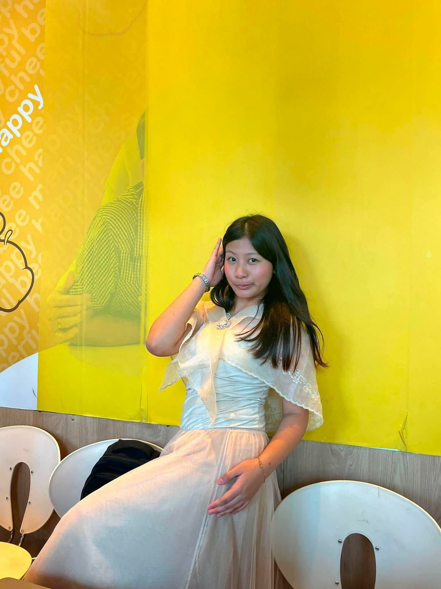
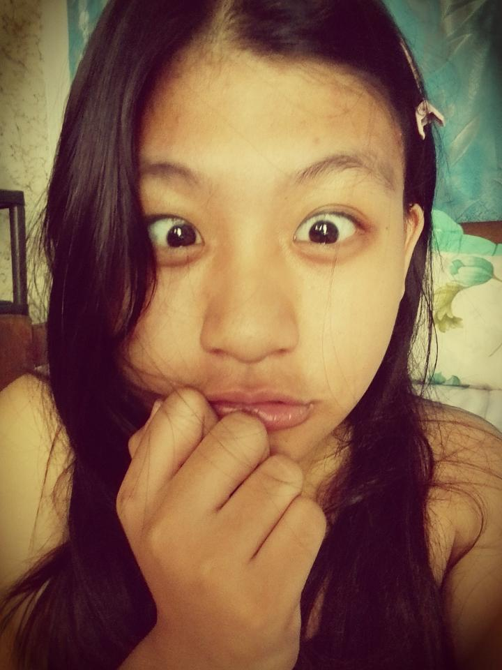
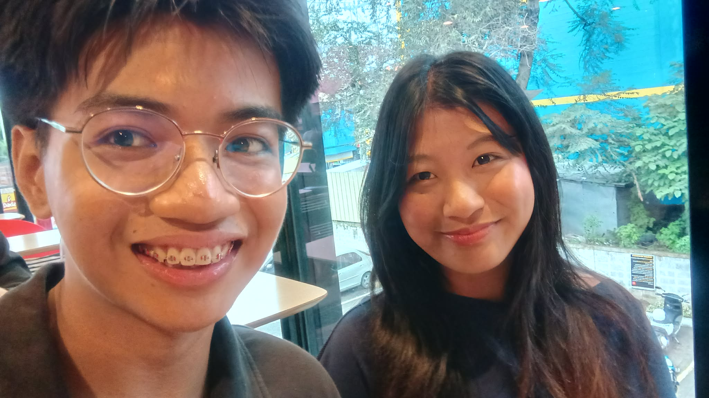
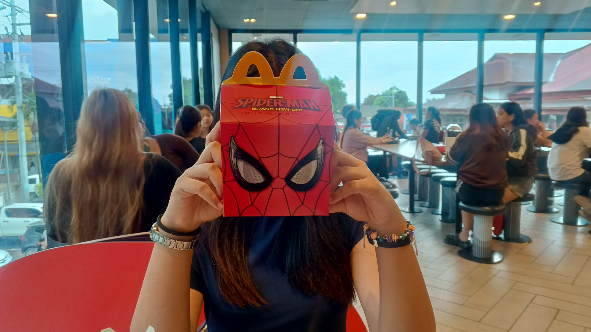
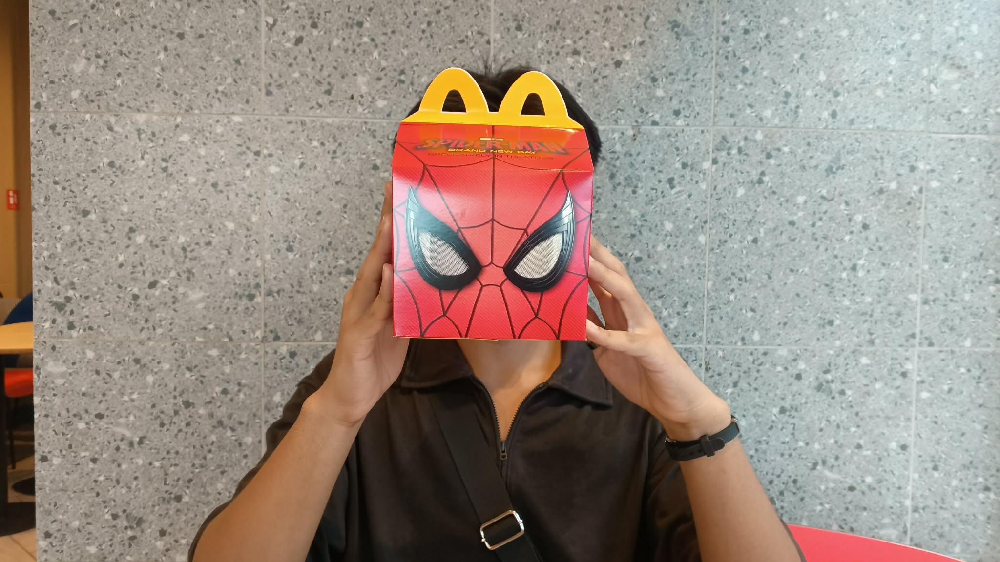

Happy Birthday Darlengggg
a little website, made with love
Play — Lover by Taylor Swift


Happy Birthday May Elizabeth Bote aka my fav NIGGA, aka my darleng, aka maasim na bebeku....surry kung di ako maalam magsulat ng litter kaya naisip ko I.T naman ako bakit di nlng keta gawan ng website hmmm🤔🤔. I know these past few days sobrang dami mong ginagawa and challenges you are facing but I know na kaya mo yang lagpasan💯, ikaw nayan eh alam kong malakas ka and I'm so so so proud of you tlga and remember andito lang ako sinu-suportahan ka😜. It's been 4 months since we started dating and even though we have some conflicts there and there... these past 4 months are the happiest months of my life👀👀. I love when we asar eachother, I love pikunin ka, I love being sweet with you and love ko yung pagegeng sweet mu minsan kahit rare un... heh at syempre lab keta... I hope na ekaw na tlga hyss isusumpa ko tlga ang mondo pag di tau endgame hyss. Love lots from puwit ko and akeng right atrium and left ventricle and akeng left and right testicle and scrotum mwaa😘😘😘, ay eto pa pala I'm writing this before ng competition mo kasi icocode kopa hehehh but Congratss kahit manalo o matalo kapa I know you did your best panalo kaparin sa huli at saaken😘💯.
Us in da past 4 months


